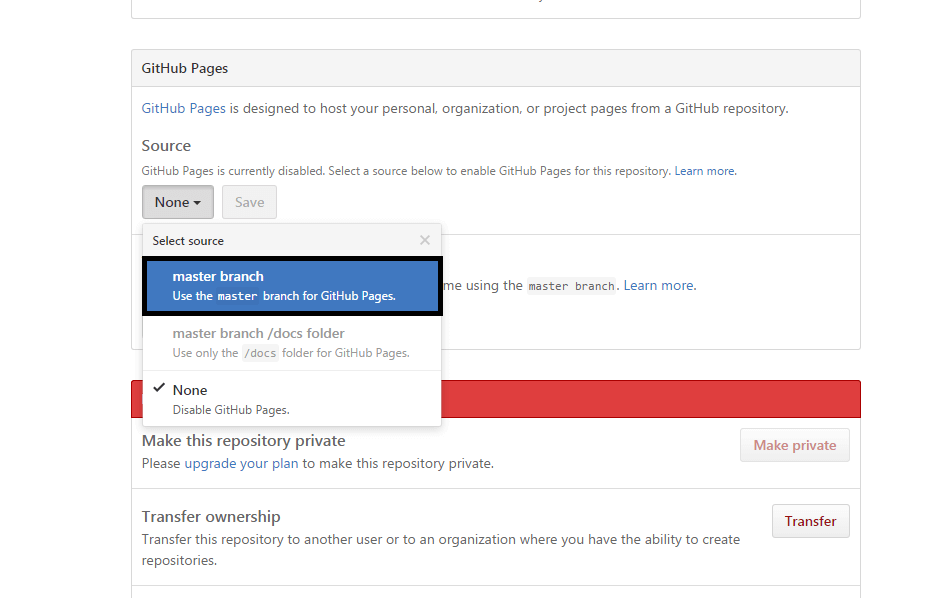
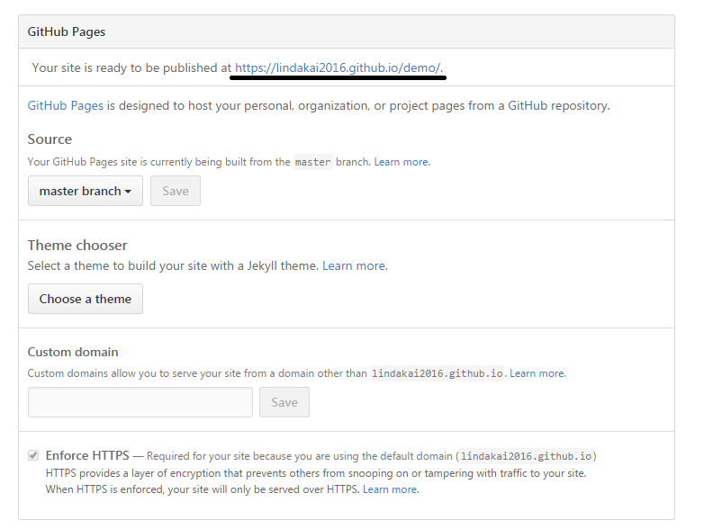

在github上搭建免费blog详细步骤
登录github，选择Create a new repository创建一个新的项目demo，点击右上角的setting进入项目设置界面。

找到GitHub Pages，在Source中选择master,即表示在该项目中启用Github Pages功能，点击旁边的save保存。

保存成功会出现Your site is ready to be published at https://lindakai2016.github.io/demo/.后面为博客的url，默认使用的是github的域名，你也可以使用自己的域名，那么首先 必须找一个域名商注册一个域名，然后在域名DNS记录中添加一个CNAME记录指向默认的github博客域名。
